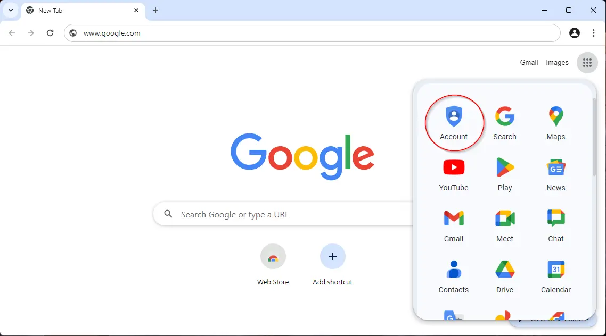
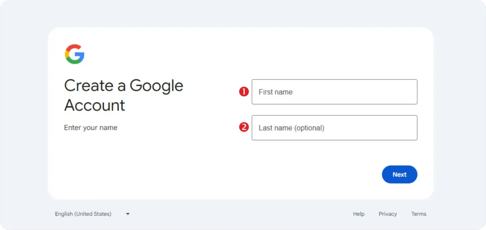
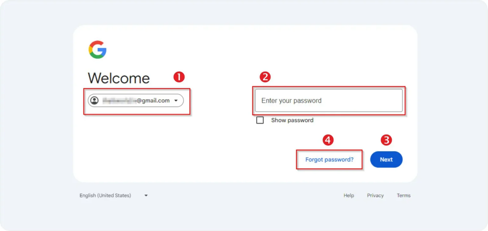

Step 1. गूगलचे संकेतस्थळ (GoogleWebsite)
गूगल अकाऊंट तयार करण्यासाठी गूगलचे संकेतस्थळावर नोंदणी करणे आवश्यक असते. नोंदणी वयक्तिक माहिती आणि मोबाईल क्रमांकाची आवश्यकता असते
1.1 गूगल क्रोम इंटरनेट ब्राऊजर उघडा (Open Chrome Browser)
1. गूगल क्रोम इंटरनेट ब्राऊजर उघडा.
2. गूगल क्रोम ब्राऊजर विंन्डोज ऑपरेटिंग सिस्टीम मध्ये उघडण्यासाठी Start Menu > All Apps > Google Chrome > Click on Icon या पद्धतीचा उपयोग करु शकता.
3. इंटरनेट एक्सप्लोरर मध्ये गूगल संकेतस्थळाचा पत्ता म्हणजेच युआरएल www.google.com असे टाईप करा, आणि Enter कि प्रेस करा.
1.2 गूगलचे संकेतस्थळ

1. गूगलचे संकेतस्थळ www.google.com भेट द्या.
2. गूगलचे संकेतस्थळच्या मुख्यपृष्ठावरती अनेक पर्याय दिसतात. जसे सर्च बॉक्स, गूगल लोगो...
3. मुख्यपृष्ठाच्या उजव्या बाजूवरती दिसणा-या या आयकॉन सदृश्य पर्यायाची निवड करा. या मेनु आंतर्गत अनेक घटक दिसतील त्यापैकि या पर्यायावरती क्लिक करा.
4. गूगल अकाऊंट तयार करण्यासाठीचा नवीन वेबपान दिसेल त्यामध्से असलेल्या "Create an Account" या पर्याय बटनवरती क्लिक करा.
Step 2. गूगल अकाऊंट सेटअप (Create Google)
गूगल अकाऊंट तयार करण्यापुर्वी वापरकर्ताला गूगलद्वारे विचारलेली माहिती प्रविष्ठ करावी लागते. माहिती प्रविष्ठ करताना बरोबर आणि अचुक माहिती तपासुन प्रविष्ठ करा. गूगलचे पासवर्ड विसल्यास याच माहितीच्या आधारे पासवर्ड बदलता किंवा रिसेट करता येतो.2.1 तुमचे नाव प्रविष्ठ करा (Enter Your Name) 
1. पहिले नाव (First Name) - पहिले नाव अर्थात तुमचे स्वुताःचे नाव इंग्रजी वर्णमालेत टाईप करा. समजा तुमचे नाव अनिल अ. कुमार असे पुर्ण नाव असेल तर फक्त अनिल है तुमचे पहिली नाव असेल.
2. आडनाव/शेवटचे नाव (Last Name) - तुमच्या नावाचे सर्वात शेवटचे नाव किंवा आडनाव इंग्रजी वर्णमालेत प्रविष्ठ करा.
2.2 साधारण माहिती (Basic Information)
 1. महिना (Month) वरील चित्रामध्ये दर्शवलेल्या बेसिक इन्फॉरमेशन भागामध्ये "Month" या ड्रॉप डाऊन यादी मधुन तुमच्या जन्म कोणत्या महिन्यामध्ये झालेला आहे तो निवडा.
1. महिना (Month) वरील चित्रामध्ये दर्शवलेल्या बेसिक इन्फॉरमेशन भागामध्ये "Month" या ड्रॉप डाऊन यादी मधुन तुमच्या जन्म कोणत्या महिन्यामध्ये झालेला आहे तो निवडा.
2. दिवस (Day) - तुमचा जन्म कोणत्या दिवशी झाला आहे तो दिवस जन्म दिवस अंकामध्ये टाईप करा.
3. वर्ष (Year) - जन्म वर्ष प्रविष्ठ करा.
4. लिंग (Gender) - या भागामध्ये ड्रॉपडाऊन यादीतुन योग्य पर्याय निवडा
2.3 साधारण माहिती (Basic Information)
 1. वापरकर्ता नाव (User Name) तुमच्या जिमेल म्हणजेच गूगल अकाऊंट साठी वापरकर्ता नाव प्रविष्ठ करा. वापरकर्ता नाव म्हणजेच युजर नेम मध्ये तुम्ही अक्षरे (A-Z, a-z), नंबरस् (0-9) आणि चिन्हे (.-_) यांचा वापर करु शकता
1. वापरकर्ता नाव (User Name) तुमच्या जिमेल म्हणजेच गूगल अकाऊंट साठी वापरकर्ता नाव प्रविष्ठ करा. वापरकर्ता नाव म्हणजेच युजर नेम मध्ये तुम्ही अक्षरे (A-Z, a-z), नंबरस् (0-9) आणि चिन्हे (.-_) यांचा वापर करु शकता
Step 3. गूगल अकाउंट मध्ये प्रवेश कसे करावे? सेवा (Gmail Login)
गूगलच्या अनेक सेवा वापरण्यासाठी तुम्ही तुमच्या अकाउंट मध्ये प्रवेश असणे आवश्यक आहे. प्रवेश करण्याच्या पद्धतीला लॉग इन असे म्हणतात, लॉग इन करण्यासाठी इमेल आयडी, पासवर्ड आणि काहि वेळेस मोबाईल गरजेचे असते. गूगलचे अकाऊंट तयार करताना तुम्ही जो इमेल आयडी आणि पासवर्ड प्रविष्ठ केलेला होता त्याच्या वापर करुन तुम्ही गूगल अकाउंट मध्ये प्रवेश करत असता
1. गूगल अकाऊंटमध्ये प्रवेश करण्यासाठी तुम्हाला सुरवातीला सांगितल्या प्रमाणे गूगलचे संकेतस्थळाचे मुख्यपृष्ठावरील "Gmail" या लिंक वरती माऊसने क्लिक करावे लागेल.
2. उपलब्ध होणा-या Sign in पर्यायाची निवड केल्यानंतर गूगल अकाऊंटमध्ये प्रवेश करण्यासाठी तुमच्या इमेल आयडी किंवा मोबाईल क्रमांक प्रविष्ठ करणे आवश्यक आहे. त्यानंतर "Next" या बटनवरती क्लिक करा.
3.2 पासवर्ड प्रविष्ठ करा 
1. Welcome इमेल आयडी प्रविष्ठ केल्यानंतर तुम्हाला "Welcome" शिर्षक आंतर्गत तुमचा गूगल इमेल आयडी दिसेल. उदा. yourusername@gmail.com
2. प्रविष्ठ केलेल्या इमेल आयडी साठीचा पासवर्ड तुम्हाला "Enter your password" या बॉक्स मध्ये एन्टर करावा लागतो. पासवर्ड टाईप करताना कॅप्स लॉक आणि न्युम लॉक चालु आहे अथवा बंद आहे ते तपासा. पासवर्डची अक्षरे कॅपीटल व स्मॉल, नंबर आणि चिन्ह अचुक प्रविष्ठ करा.
3. पासवर्ड प्रविष्ठ केल्यांनतर अकाऊंट मध्ये प्रवेश करण्यासाठी "Next" या बटनाचा वापर करा.
4. पासवर्ड लक्षात नसेल किंवा विसरला असल्यास "Forgot Password?" या पर्यायाद्वारे पासवर्ड रिसेट करता येतो किंवा बदलता येतो.
सारांश - Create Gmail Account in Marathi Mahit
गूगलचे एक अकाऊंट गुर्गेलच्या सर्व सेवा वापरण्यासाठी पुरेसे आहे. 15Gb च्या स्टोरेजसह तुम्ही तुमचे इमेजेस, डॉक्युमेंट आणि महत्वाचा डेटा गूगल ड्राईव्ह वरती संग्रहीत करु शकता. पत्रव्यावहारासाठी गूगलची जिमेल अद्यावत व प्रगत सेवा वापरता येते. गूगल मॅप द्वारे मार्ग, ठिकाण आणि गावाची शोध घेऊ शकता तसेच भाषांतरासाठी गूगल ट्रान्सलेट सेवा प्रभावि भाषातर उपलब्ध करते."गुगल अकाऊंट तयार करा 5 सोप्या स्टेप मध्ये" या ब्लॉग मध्ये दिलेली माहिती गूगल अकाऊंट सेटअप करण्यापासुन ते सुरक्षा तसेच इतर माहिती दिली आहे. या विषयीचे आपले विचार, मत, अभिप्राय देण्यासाठी कंमेट आवश्य वापर करा. धन्यवाद!